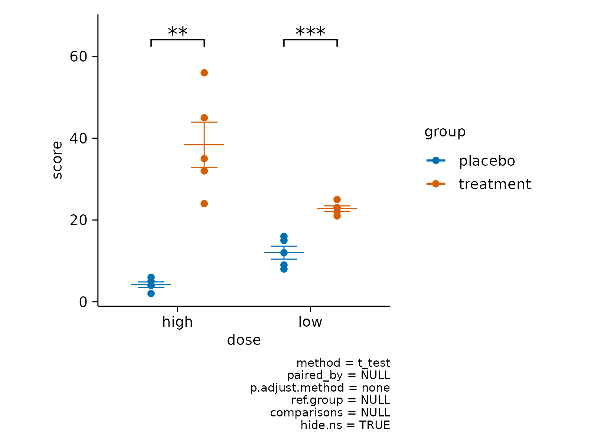
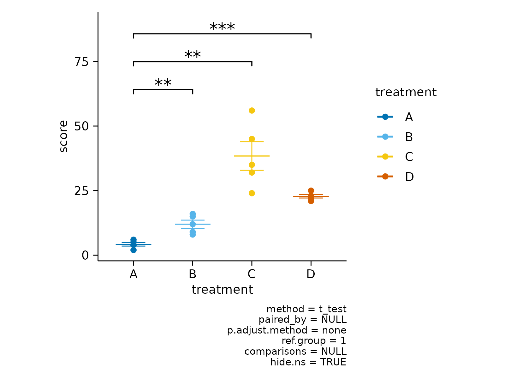
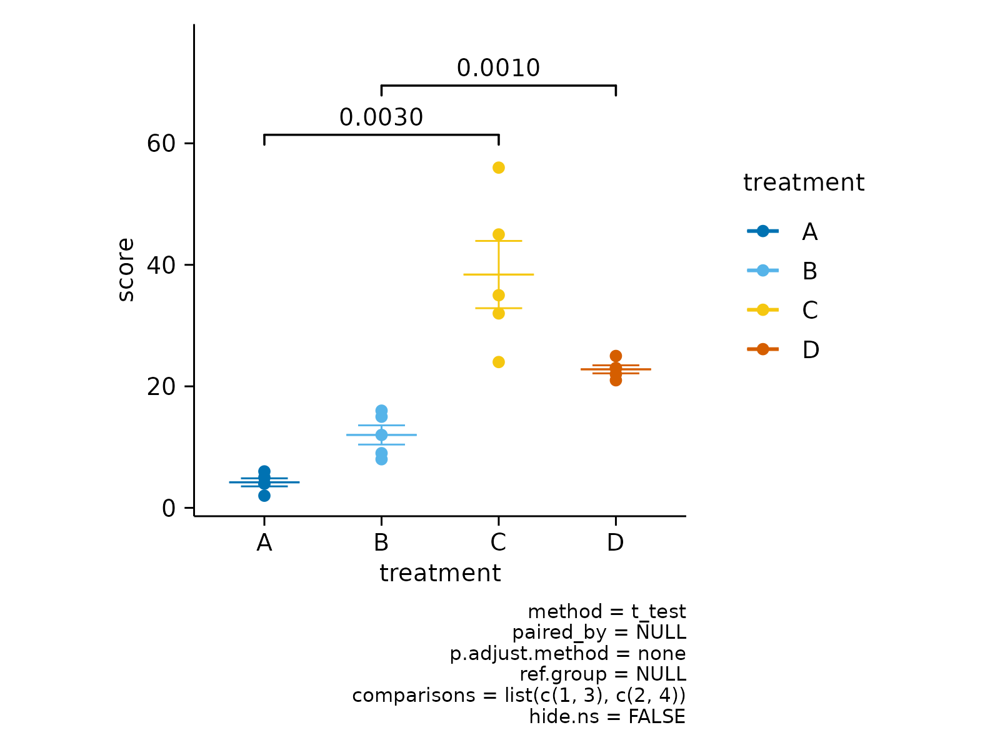

Add statistical test
Usage
add_test_pvalue(
plot,
padding_top = 0.15,
method = "t.test",
p.adjust.method = "none",
ref.group = NULL,
label = "{format_p_value(p.adj, 0.0001)}",
label.size = 7/ggplot2::.pt,
step.increase = 0.15,
vjust = -0.25,
bracket.nudge.y = 0.1,
hide.ns = FALSE,
p.adjust.by = "panel",
symnum.args = list(cutpoints = c(0, 0.001, 0.01, 0.05, Inf), symbols = c("***", "**",
"*", "ns")),
hide_info = FALSE,
...
)
add_test_asterisks(
plot,
padding_top = 0.1,
method = "t.test",
p.adjust.method = "none",
ref.group = NULL,
label = "p.adj.signif",
label.size = 10/ggplot2::.pt,
step.increase = 0.2,
vjust = 0.3,
bracket.nudge.y = 0.15,
hide.ns = TRUE,
p.adjust.by = "panel",
symnum.args = list(cutpoints = c(0, 0.001, 0.01, 0.05, Inf), symbols = c("***", "**",
"*", "ns")),
hide_info = FALSE,
...
)Arguments
- plot
A
tidyplotgenerated with the functiontidyplot().- padding_top
Extra padding above the data points to accommodate the statistical comparisons.
- method
a character string indicating which method to be used for pairwise comparisons. Default is
"wilcox_test". Allowed methods include pairwise comparisons methods implemented in therstatixR package. These methods are:"wilcox_test", "t_test", "sign_test", "dunn_test", "emmeans_test", "tukey_hsd", "games_howell_test".- p.adjust.method
method for adjusting p values (see
p.adjust). Has impact only in a situation, where multiple pairwise tests are performed; or when there are multiple grouping variables. Ignored when the specified method is"tukey_hsd"or"games_howell_test"because they come with internal p adjustment method. Allowed values include "holm", "hochberg", "hommel", "bonferroni", "BH", "BY", "fdr", "none". If you don't want to adjust the p value (not recommended), use p.adjust.method = "none".- ref.group
a character string or a numeric value specifying the reference group. If specified, for a given grouping variable, each of the group levels will be compared to the reference group (i.e. control group).
ref.groupcan be also"all". In this case, each of the grouping variable levels is compared to all (i.e. basemean).Allowed values can be:
numeric value: specifying the rank of the reference group. For example, use
ref.group = 1when the first group is the reference; useref.group = 2when the second group is the reference, and so on. This works for all situations, including i) when comparisons are performed between x-axis groups and ii) when comparisons are performed between legend groups.character value: For example, you can use
ref.group = "ctrl"instead of using the numeric rank value of the "ctrl" group."all": In this case, each of the grouping variable levels is compared to all (i.e. basemean).
- label
character string specifying label. Can be:
the column containing the label (e.g.:
label = "p"orlabel = "p.adj"), wherepis the p-value. Other possible values are"p.signif", "p.adj.signif", "p.format", "p.adj.format".an expression that can be formatted by the
glue()package. For example, when specifyinglabel = "Wilcoxon, p = \{p\}", the expression {p} will be replaced by its value.a combination of plotmath expressions and glue expressions. You may want some of the statistical parameter in italic; for example:
label = "Wilcoxon, italic(p)= {p}"
.
- label.size
change the size of the label text
- step.increase
numeric vector with the increase in fraction of total height for every additional comparison to minimize overlap.
- vjust
move the text up or down relative to the bracket.
- bracket.nudge.y
Vertical adjustment to nudge brackets by (in fraction of the total height). Useful to move up or move down the bracket. If positive value, brackets will be moved up; if negative value, brackets are moved down.
- hide.ns
can be logical value (
TRUEorFALSE) or a character vector ("p.adj"or"p").- p.adjust.by
possible value is one of
c("group", "panel"). Default is"group": for a grouped data, if pairwise test is performed, then the p-values are adjusted for each group level independently. P-values are adjusted by panel whenp.adjust.by = "panel".- symnum.args
a list of arguments to pass to the function
symnumfor symbolic number coding of p-values. For example,symnum.args <- list(cutpoints = c(0, 0.0001, 0.001, 0.01, 0.05, Inf), symbols = c("****", "***", "**", "*", "ns")).In other words, we use the following convention for symbols indicating statistical significance:
ns: p > 0.05*: p <= 0.05**: p <= 0.01***: p <= 0.001****: p <= 0.0001
- hide_info
Whether to hide details about the statistical testing as caption. Defaults to
FALSE.- ...
Arguments passed on to
ggpubr::geom_pwc().
Details
add_test_pvalue()andadd_test_asterisks()useggpubr::geom_pwc(). Check there for additional arguments.
Examples
study %>%
tidyplot(x = dose, y = score, color = group) %>%
add_mean_dash() %>%
add_sem_errorbar() %>%
add_data_points() %>%
add_test_pvalue()
# Change stat methods
study %>%
tidyplot(x = dose, y = score, color = group) %>%
add_mean_dash() %>%
add_sem_errorbar() %>%
add_data_points() %>%
add_test_pvalue(method = "wilcoxon", p.adjust.method = "BH")

# Define reference group to test against
study %>%
tidyplot(x = treatment, y = score, color = treatment) %>%
add_mean_dash() %>%
add_sem_errorbar() %>%
add_data_points() %>%
add_test_pvalue(ref.group = "A")
# hide non-significant p values
gene_expression %>%
# filter to one gene
dplyr::filter(external_gene_name == "Apol6") %>%
# start plotting
tidyplot(x = condition, y = expression, color = sample_type) %>%
add_mean_dash() %>%
add_sem_errorbar() %>%
add_data_points() %>%
add_test_pvalue(hide.ns = TRUE)
# Adjust top padding for statistical comparisons
study %>%
tidyplot(x = treatment, y = score, color = treatment) %>%
add_mean_dash() %>%
add_sem_errorbar() %>%
add_data_points() %>%
add_test_pvalue(padding_top = 0.08)

# Hide stats information
study %>%
tidyplot(x = dose, y = score, color = group) %>%
add_mean_dash() %>%
add_sem_errorbar() %>%
add_data_points() %>%
add_test_pvalue(hide_info = TRUE)
